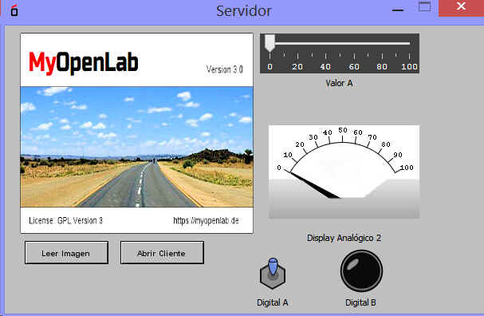

Funciónes Digtales Complejas: SERVIDOR
El bloque permite el envio y recepció de datos entre dos elementos SERVIDOR y CLIENTE
El SERVIDOR es el encargo del interambio de datos tanto en el envio como en la recepcion de datos del SERVIDOR.
Las Entradas del CLIENTE son: In0 a In7 (pueden adoptar la naturaleza de caulquiera de los tipos de datos que utiliza MyOpenLab) Al conectar la funete de datos al pin de entrada In este adopta el tipo de la fuente.
Las salidas del CLIENTE son: OutPin0 a OutPin7 que podremos configurar en la parte de Editor de Propiedades del Componente.
|
 |